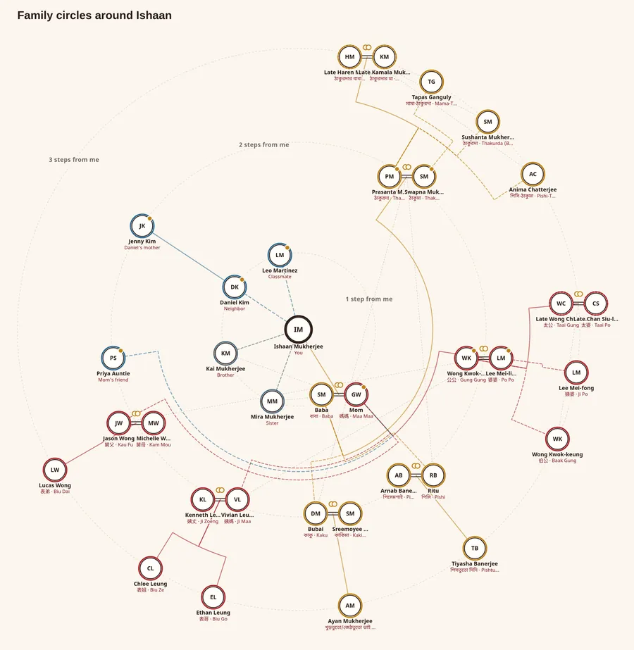
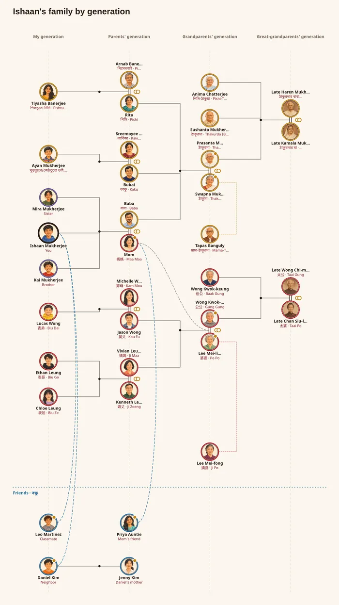
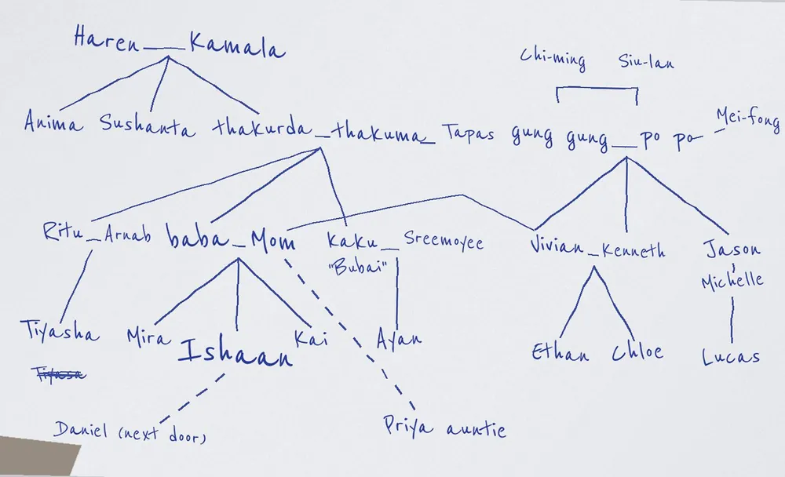
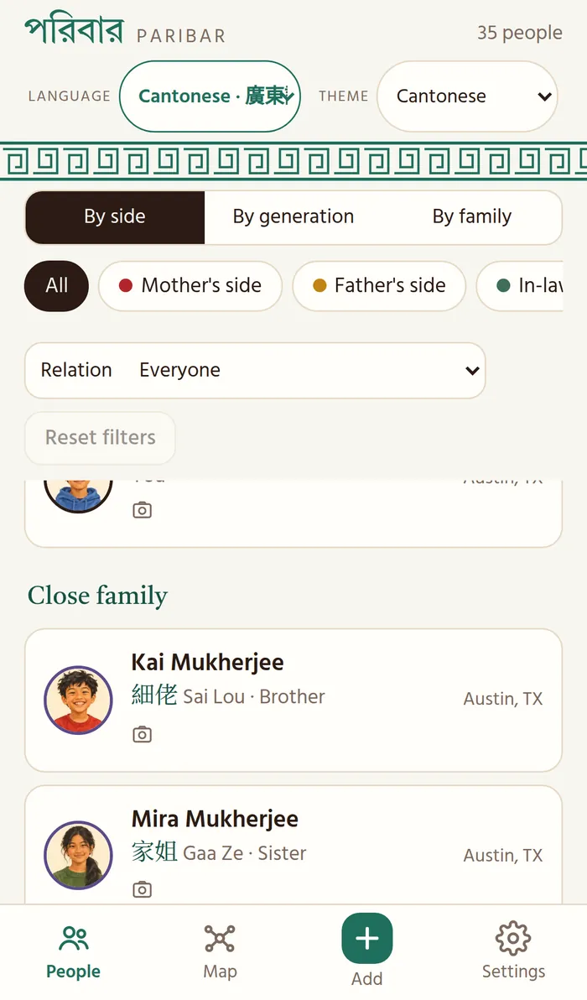

A free family tree and contact book for your phone. See how everyone is connected, the friends who are family too, and what to call each person, in 20+ heritages.
I went back to India after 20 years knowing just two relatives, both very elderly, and only their names and phone numbers. So I built Paribar (family in Bengali) to show how everyone is connected, tell me what to call each person, and keep their details in one place, so next time I could reach out myself.
Then I spent a few weeks going home to home, through the family and close friends, showing everyone how they're all connected. My little nieces and nephews loved it. And mapping it out brought up stories that never come up otherwise, like the wild thing a distant uncle once did. He's on the map now.
How the family got in
We drew the family in chicken scratch on paper, then put a phone in the middle of the room and just talked, in Hindi, Bengali and English all at once. An AI turned that into a file, and Paribar drew the tree. We added phone numbers and took everyone's picture, great-grandparents included.
Family history still lives in what people remember, on scraps of paper and in the photo on the wall. Paribar keeps it somewhere you can share with your kids.
With the holidays here and everyone together, I hope you get to have these conversations too. — Akash
The right word for everyone
In many families there's no plain "aunt" or "uncle". The word tells you whose side they're on and whether they're older or younger, and calling someone the right one is how you show respect. In Bengali:
পিসি Pishi
Dad's sister
মাসি Mashi
Mom's sister
জেঠু Jethu
Dad's older brother. His wife is Jethima.
কাকু Kaku
Dad's younger brother. His wife is Kakima.
Other families split it the same way: Tauji and Chacha in Hindi, Taya and Chacha in Punjabi, 큰아버지 and 작은아버지 in Korean. Paribar works out each word for you from how people are linked and who's older (a birth year, or even "the 1960s", is enough), and can say it out loud. So you always know what to call someone, and say it respectfully.
20+ heritages, one sample each
What the app calls four of the sample family's relatives, in every heritage it knows. Swipe the table sideways on a phone.
Heritage
Mom's sister
Dad's sister
Dad's younger brother
Mom's mom
Bengali
মাসি Mashi
পিসি Pishi
কাকু Kaku
দিদিমা Didima
Hindi / North Indian
मौसी Mausi
बुआ Bua
चाचा Chacha
नानी Nani
Punjabi
ਮਾਸੀ Masi
ਭੂਆ Bhua
ਚਾਚਾ Chacha
ਨਾਨੀ Nani
Gujarati
માસી Masi
ફોઈ Foi
કાકા Kaka
નાની Nani
Cantonese
姨媽 Ji Maa
姑媽 Gu Maa
叔叔 Suk Suk
婆婆 Po Po
Mandarin
姨妈 Yímā
姑姑 Gūgu
叔叔 Shūshu
外婆 Wàipó
Japanese
伯母さん Obasan
伯母さん Obasan
叔父さん Ojisan
おばあさん Obāsan
Korean
이모 Imo
고모 Gomo
작은아버지 Jageunabeoji
외할머니 Oehalmeoni
Vietnamese
Bác
Bác
Chú
Bà ngoại
Arabic
خالتو Khalto
عمتو ʿAmmto
عمو ʿAmmo
تيتا Teta
Ghanaian (Akan: Twi, Asante, Fante)
Maame panin
Sewaa
Papa kumaa
Nana baa
Nigerian (Yoruba)
Ẹ̀gbọ́n ìyá
Ẹ̀gbọ́n bàbá
Àbúrò bàbá
Ìyá àgbà
Spanish (Mexico & Latin America)
Tía
Tía
Tío
Abuela
Spanish (Puerto Rico & Dominican Rep.)
Titi
Titi
Tío
Abuela
Spanish (Argentina & Uruguay)
Tía
Tía
Tío
Nona
Haitian Creole
Matant
Matant
Tonton
Grann
Jamaican Patois
Auntie
Auntie
Uncle
Granny
English (American)
Aunt
Aunt
Uncle
Grandma
French
Tante
Tante
Oncle
Grand-mère
German
Tante
Tante
Onkel
Oma
Irish (Gaelic)
Aintín
Aintín
Uncail
Mamó
Italian
Zia
Zia
Zio
Nonna
Romanian
Mătușă
Mătușă
Unchi
Bunică
Swedish
Moster
Faster
Farbror
Mormor
Some heritages use one word where others use four. That's the point: Paribar uses whichever your family does. Don't see yours? Ask me, or just message me.
Two ways to see your family
Both are on the Map tab. Try them with the sample family.

Family circlesYou're in the middle. Everyone sits on a ring by how closely they're related: parents and siblings close in, cousins farther out. Friends link in with dashed blue lines.

Generations treeEach generation gets its own column, with couples side by side and friends in their own band. Tap anyone to light up the path from you.
Who was the first in the family to leave home, and why?
What did you call your grandparents' brothers and sisters?
Which relative has the story everyone tells?
Sketch the answers on a napkin. That's enough to start your tree.
Friends can be family too
Add the neighbor who's practically an uncle, the friend your kids call Auntie, a colleague, a classmate. They show up in both views, linked through whoever they know. In a Bengali family, a friend's mom even gets a courtesy word: Mashima.
Type it in, or let an AI do it
Typing works fine, and keeps everything on your phone. An AI chat is a shortcut for big families: it turns a drawing or a conversation into a file, and Paribar builds the rest.
Reads your drawing
Draw the family on paper and send the AI a photo.
Listens to the room
Let everyone talk, in any mix of languages. The AI fills in what the family words already say.
Asks, doesn't guess
When something's unclear, like which uncle, it asks. Then it hands you one file to import.

Chicken scratch is plentyA drawing like this (sample family, made-up names) is all the AI needs.
Stay in touch
Everyone's details in one place. One tap to call, chat, email or get directions.

Everyone in one place, in your family's wordsHere in Cantonese: Kai is 細佬 Sai Lou, little brother. Tap a name for a bigger photo, Call, Chat, Write or Map.
Happy birthday
Tap Send wishes to open WhatsApp with a greeting in their family's words.
Check in
Tap Call or Chat on anyone's card.
Go see them
Tap Map for directions, or to book a ride.
Remember visits
Log who you saw, where, gifts and photos, for next time.
Get started in four steps
See the sample family to explore both views. Open it
Start with you: add your name and pick each side's heritage. Start
Add family: type them in, or copy the built-in AI prompt into any chatbot and give it a photo of a paper tree or a recording of the room. Import the file it gives you. You can add phone contacts too.
Keep it handy (optional): in your browser menu, tap Add to Home screen (Android) or Share, then Add to Home Screen (iPhone). It works offline after that.
Private by design
No account. Nothing on a server. Your family stays on your phone.
No ads, no tracking, no analytics. The page only loads its own files, and a security policy stops it from sending data to any other site.
Back up now and then: clearing your browser data erases it.
Anything you tell or show an AI chat, photos included, goes to that company. Voice typing uses your browser's speech service.
From Bengali and Cantonese to Akan, Haitian Creole and Romanian. See a sample of each.
Mixed families
Each side keeps its own words. The Language menu shows everyone in another heritage's words.
How any two people are related
Pick two people and see the path between them, step by step.
Your files
Back up to JSON, CSV (opens in Excel), ZIP with photos, or contacts (.vcf). Imports Excel too.
Fun extra: make it a show. Export your family from Paribar and give it, with a few photos, to an AI that makes pictures or video. Ask for a family tree in the style of your favorite show, movie or book. Kids love it.
Pass it on
If a story comes up at your table, I'd love to hear it. Reply in the thread or message me.